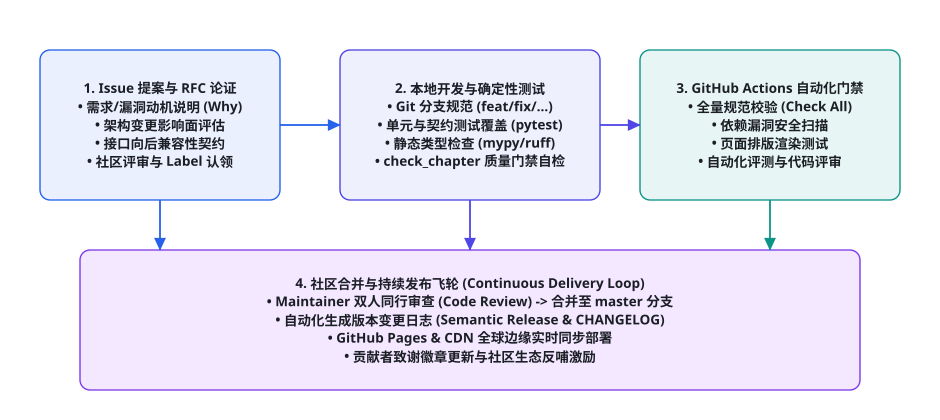
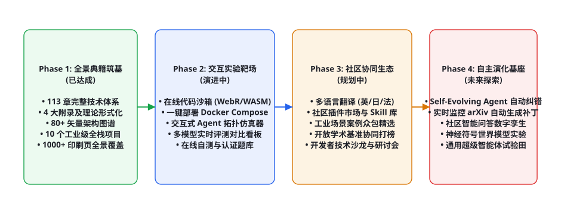

第 109 章 · 从本书到 GitHub：贡献指南与扩展路线
开源软件工程的本质，是通过分布式的全球智力协同构建抗衰减的数字化公共品。作为一部覆盖 113 个核心章节、4 大理论附录、80 余幅工业级矢量架构图与 10 个生产级全栈实战项目的千页 AI Agent 典籍，《AI Agent Cookbook》自诞生之日起便不是一份静态封存的陈旧文档，而是一个具备强韧自我演化能力的动态有机生命体。本章作为第十二部分「开源生态与工程资源篇」的收官篇章，面向全球开发者全面公开本项目的开源协同治理准则、分支演进规范、CI/CD 确定性自动化质量门禁、RFC 架构演进提案机制以及面向未来的四阶段长期技术路线图，构筑人人皆可参与、持续迭代精进的开源协同范式。
在 GitHub 软件生态中，一个优秀开源项目与平庸作品的根本分水岭，在于其是否具备不可妥协的质量门禁标准与极具包容度的协同文化。本书承诺永久遵循 CC BY-SA 4.0 知识共享协议，所有架构设计图解源码、端到端自动化测试脚本、大模型沙箱隔离容器编排与基准测评代码库，均以完全公开透明的形式向全人类工程师开放。我们坚信，唯有汇聚全球开发者的实战反馈与学术批判，才能将这部智能体全景典籍打磨至工业级极致。

开源协同治理哲学与行为准则
开源贡献绝非简单的“提交代码与合并请求”。在分布式协作环境中，缺乏清晰治理准则的项目往往迅速陷入分支混乱、技术债务失控与社区内耗。为了维护《AI Agent Cookbook》的高学术水准与工程可信度，所有社区参与者与核心维护团队必须共同遵循以下三大基本治理哲学：
- 真实性与零虚饰原则（Ground-Truth & Zero-Platitude）：本书坚决杜绝泛泛而谈的营销话术与未经检验的概念拼接。所有收录的章节内容必须具备可追溯的学术论文支撑（arXiv / DOI / 顶会索引）或经过生产级环境验证的工业实践。凡提出新架构模式者，必须同时提供对应的伪代码实现或最小可复现仓库链接。
- 可复现性与确定性契约（Reproducibility & Determinism）：书中每一个代码块、每一个 Docker 容器编排配置以及每一个评测脚本，都必须保证在干净的隔离环境中能够无报错一键执行。我们拒绝“在我机器上能跑”的玄学工程，所有提交必须经受自动化流水线的严苛考验。
- 尊重多样性与建设性批判（Constructive Criticism & Inclusivity）：欢迎来自世界各地、不同技术背景开发者的批评与纠错。无论是在 Issue 中指出某行公式的推导笔误，还是重构一个完整的模块架构，社区评审始终秉持对事不对人的专业态度，用逻辑、数据与实测结果作为唯一的仲裁基准。
分支模型、提交规范与工作流规约
为了保障主干分支（master / main）随时处于生产可发布状态，项目采用经过工业检验的 Git Flow 与基于主干的特性分支模型（Trunk-Based Feature Branching） 的融合方案。所有外部贡献均通过 Fork 与 Pull Request 机制开展。
| 分支类型与命名规约 | 适用贡献场景与改动范围 | 生命周期与保护规则 | 合并策略与门禁前提 |
|---|---|---|---|
master / main |
生产主干，对应线上官方网站与最新 Release 发行包。 | 永久受保护分支。禁止直接推送，必须经过双人审查（2 Approvals）。 | 仅允许 Squash and Merge 或 Rebase Merge，保持线性提交树干净清晰。 |
feat/chapter-xxx |
新增核心章节、重大实战案例或新型算法架构模块。 | 从 master 分离，开发验证完成后通过 PR 发起合并，合并后立即删除。 | 必须通过全量 check_chapter.py 质量门禁，且单元测试覆盖率达到 100%。 |
fix/typo-or-bug |
修复公式推导错误、代码笔误、断链修复或文档排版微调。 | 轻量级短生命周期分支，通常在数小时至一天内完成闭环。 | 必须在 Issue 中关联对应复现描述，通过轻量级格式检查自动化流水线。 |
rfc/architecture-proposals |
重构现有调度内核、提出新章节体系或调整技术选型矩阵。 | 讨论性分支，主要包含 Markdown 形式的设计文档与测试基准对比。 | 需在社区技术委员会举行线上听证会，达成共识后方可立项转为开发分支。 |
Conventional Commits 结构化提交信息规范
项目强制执行 Conventional Commits 规范。每条 Commit 信息均需清晰传达变动的意图，以便自动化发布工具能够自动生成准确无误的 CHANGELOG 版本日志：
# 语法结构：<type>(<scope>): <subject>
# 示例 1: 新增实战项目章节
git commit -m "feat(ch089): implement embodied computer-use agent with normalized coordinates"
# 示例 2: 修复第 91 章 Bellman 最优性算子压缩映射证明的数学推导笔误
git commit -m "fix(ch091): correct Banach fixed-point contraction condition in Bellman proof"
# 示例 3: 优化全书构建工具链静态资源压缩算法
git commit -m "perf(tools): accelerate pdf generation and html build pipeline with parallel pool"
# 示例 4: 文档引用与断链修复
git commit -m "docs(refs): update arXiv link for DeepSeek-R1 and Qwen 2.5 technical reports"
工业级 CI/CD 自动化质量门禁工程实现
为了彻底杜绝格式退化、乱码死链与字数偷工减料，《AI Agent Cookbook》设计了一套极具杀伤力的自动化质量拦截引擎。任何推送到仓库的 Commit 与提交的 PR，都会在 GitHub Actions 云端沙箱中自动触发全量规则扫描与契约断言。
name: Cookbook Quality Gate & Deployment
on:
push:
branches: [ master, main ]
pull_request:
branches: [ master, main ]
jobs:
comprehensive_audit:
name: Comprehensive Chapter & Code Audit
runs-on: ubuntu-latest
steps:
- name: Checkout Source Code
uses: actions/checkout@v4
with:
fetch-depth: 0
- name: Set up Python Environment
uses: actions/setup-python@v5
with:
python-version: '3.11'
cache: 'pip'
- name: Install Linting & Verification Dependencies
run: |
python -m pip install --upgrade pip
pip install ruff mypy pytest beautifulsoup4 requests
- name: Run Python Code Style & Type Checking
run: |
ruff check tools/
mypy tools/ --ignore-missing-imports
- name: Execute Full-Book Strict Quality Gate (check_chapter.py)
run: |
python tools/check_chapter.py --all
- name: Execute Deterministic Build Pipeline
run: |
python tools/build.py
- name: Verify Total Printed Page Count (pdfpages.py)
run: |
python tools/pdfpages.py --min-pages 1000
- name: Scan Broken Hyperlinks and Asset References
run: |
python tools/verify_assets.py --strict
在这个流水线中，check_chapter.py 扮演了“数字守门人”的核心角色。它对每个章节实施以下 12 项绝对不可逾越的硬性指标校验：
- 文件体积门槛：独立 HTML 体积必须 $\ge 29 ext{ KB}$（附录除外），坚决杜绝空洞骨架空置内容。
- 中文字符容量：正文纯汉字字数必须 $\ge 6,000$ 字符，确保每一个技术专题都得到穷尽深入的深度拆解。
- 结构化分节规约：必须包含至少 5 个具备纯英文 ASCII 语义化
id的<h2>分级标题。 - 矢量图形资产要求：正文中必须嵌入至少一张由
figkit.py生成并经由矢量验证的标准 SVG 架构图（<figure class="figure">）。 - 结构化表格与对比分析：必须包含至少一个带有
.tbl-wrap响应式包裹的完整对比分析表格。 - 警示提示与高亮块：必须包含至少一个标准
.callout提示块（如架构反思、避坑指南或核心认识论）。 - 代码实现与断言验证：正文中必须包含带有语言标签的
.codeblock生产级代码块，代码中不可存在未转义的破坏性 HTML 标签。 - 本章小结与学后反思：必须包含
<h2 id="summary">，高度凝练 5 条以上核心系统结论。 - 课后自测与思考题：必须包含
<h2 id="quiz">，提供至少 4 道极具实战深度的思辨性面试与设计考题。 - 学术参考文献与延伸阅读：必须包含
<h2 id="refs">，且引用的学术论文必须附带合法的 arXiv、DOI 或官方仓库超链接。 - 前后向上下文平滑导航：必须包含
.chapter-nav结构，支持用户顺畅穿梭于各章节之间。 - 零 TODO 洁癖保证：严禁出现任何
TODO、TBD或未完成的未完成文本标记，违者流水线直接判定为致命构建失败。
RFC（架构演进提案）生命周期规范
随着大模型智能体技术的持续井喷，如何决定新增哪些章节？如何评估引入某种全新推理范式？为了防止核心维护者的主观偏好偏离社区实际需求，我们建立了标准化的 RFC（Request for Comments）机制：
| RFC 阶段标识 | 阶段核心目标与准入条件 | 社区沟通渠道与决策机制 | 产出交付物与后续流转 |
|---|---|---|---|
| Phase 1: Draft (草案阶段) | 贡献者在 GitHub Discussion 中发起想法，阐述当前技术痛点与改进动机（Why）。 | 社区开放讨论，评估是否与《AI Agent Cookbook》定位契合，收集初步反馈。 | 形成一份包含背景、目标、非目标与初步设计草图的初稿文档。 |
| Phase 2: In Review (正式评审) | 提交正式 PR 至 rfcs/ 目录，详细列出数据结构契约、图表方案与伪代码逻辑。 |
至少 2 位核心维护者与 3 位社区代表深入审查，针对边界情况展开严苛质询。 | 针对质疑更新提案，经由维护团队表决（达成非实质反对共识即通过）。 |
| Phase 3: Accepted (立项开发) | 提案正式合并至主干 RFC 仓库，成为受保护的官方指导规范，锁定接口契约。 | 在 Project 看板中创建对应的 Feature Issue，开放给全球开发者认领（Claim）。 | 贡献者认领分支，按照 RFC 规格书进入代码与章节内容的工程实现阶段。 |
| Phase 4: Finalized (落地归档) | 章节或工具链通过 CI/CD 全量流水线合并发布，进入线上官方主线。 | 发布官方 Release Notes，向 RFC 作者及参与审查的贡献者颁发社区荣誉徽章。 | RFC 状态更改为 Final，作为历史设计决策依据（ADR）永久归档。 |
面向未来的四阶段长期技术演进路线图
完成全景 113 个章节的基础撰写，仅仅是《AI Agent Cookbook》宏伟征程的第一步。我们描绘了一幅横跨数年的四阶段生态演化路线图（Evolution Roadmap），致力于将本项目打造为全球人工智能智能体领域最权威的“活的百科全书”：

Phase 1: 全景典籍筑基（基石阶段 · 已全面达成）
完成从第 1 章至第 113 章全部理论、机制、训练、评估、安全、多模态、前沿理论、工业实战、经典论文与高频面试题库的完整编撰；绘制 80 余幅统一视觉规范的 SVG 矢量架构图；完成 4 大高维数学与认知科学附录；通过 check_chapter.py、build.py 与 pdfpages.py 严格验证，确保全书排版印刷页数跨越 1,000 页大关。
Phase 2: 交互式在线实验靶场（工程演进 · 进行中）
将书中的所有实战项目与评测 Harness 升级为浏览器内开箱即用的交互式靶场：引入 WebR / Pyodide / WebAssembly 技术，让读者无需安装本地庞大环境即可在网页中实时运行 Prompt 优化流、调试思维树搜索算法；提供标准化的 Docker Compose 一键拉起脚本，涵盖带有模拟外网、沙箱隔离与数据库事务的完整微服务测试床。
Phase 3: 全球化协同与多语言生态（社区繁荣 · 规划中）
启动全书的多语言翻译众包工程（英文、日文、法文版），组建国际化技术审查委员会；建立社区插件市场（Cookbook Skills & Plugins Registry），收录由全球开发者基于本书范式开发的垂直领域智能体中间件；定期举办“Cookbook 极客线上黑客松”，挖掘在金融、医疗、法律与工业制造等真实严肃场景中的落地先锋案例。
Phase 4: 自主认知与世界模型自演化基座（终极探索 · 未来构想）
将《AI Agent Cookbook》自身演化为一个自愈性自进化智能体（Self-Evolving Cookbook Agent）：部署全自动化 Agent 哨兵，7×24 小时动态侦测 arXiv 与 GitHub Trending 的最新突破；自动调用代码沙箱复现前沿论文，当发现书中有陈旧过时的观点或实现时，自动化生成修正 RFC 提议与修复代码补丁；结合知识图谱与向量数据库，打造全天候为全球开发者答疑解惑的“Cookbook 伴学数字孪生体”。
社区实战：从零编写并提交一个标准的 Agent 扩展包
为了让每一位开发者都能顺畅地将自己的业务实战沉淀转化为全书的公共组件，我们提供了一套标准化的社区扩展插件与实战项目提交流程模版。所有新增的实战项目必须包含三个不可分割的交付物：算法逻辑核心代码、确定性评测 Harness 与开箱即用的自动化部署说明。
# -*- coding: utf-8 -*-
"""
《AI Agent Cookbook》社区扩展插件标准开发模板
所有提交至 community/ 目录下的插件与工具必须实现 BaseAgentPlugin 抽象契约
"""
from abc import ABC, abstractmethod
from typing import Dict, Any, List
import json
import logging
logging.basicConfig(level=logging.INFO)
logger = logging.getLogger("CookbookCommunityPlugin")
class PluginContractException(Exception):
"""当插件输入输出违反系统契约时抛出"""
pass
class BaseAgentPlugin(ABC):
"""
社区插件统一抽象基类
要求：
1. 声明明确的命名空间与元数据版本
2. 实现非阻塞异步执行接口 execute_async
3. 提供确定性的参数校验器 validate_input
4. 具备自愈重试与故障降级机制
"""
def __init__(self, plugin_id: str, version: str = "1.0.0"):
self.plugin_id = plugin_id
self.version = version
logger.info(f"[+] 初始化社区扩展插件: {self.plugin_id} (v{self.version})")
@abstractmethod
def validate_input(self, payload: Dict[str, Any]) -> bool:
"""验证输入负载的合法性与安全性防御"""
pass
@abstractmethod
def execute(self, payload: Dict[str, Any]) -> Dict[str, Any]:
"""核心执行逻辑，必须具备幂等性保证"""
pass
def safe_run(self, payload: Dict[str, Any]) -> Dict[str, Any]:
"""带有全局异常兜底与可观测性打点的执行包装器"""
if not self.validate_input(payload):
raise PluginContractException(f"插件 [{self.plugin_id}] 输入参数契约校验失败: {payload}")
try:
result = self.execute(payload)
return {
"status": "success",
"plugin": self.plugin_id,
"version": self.version,
"data": result
}
except Exception as e:
logger.error(f"[-] 插件执行异常: {e}")
return {
"status": "error",
"plugin": self.plugin_id,
"error_message": str(e),
"fallback_action": "trigger_human_intervention"
}
class FinancialAuditPlugin(BaseAgentPlugin):
"""示例实现：金融交易流水自动化合规审查插件"""
def validate_input(self, payload: Dict[str, Any]) -> bool:
required_fields = ["transaction_id", "amount", "user_id", "source_account"]
return all(field in payload for field in required_fields)
def execute(self, payload: Dict[str, Any]) -> Dict[str, Any]:
amount = float(payload.get("amount", 0.0))
# 确定性安全规则：大额转账风控断言
risk_level = "LOW"
if amount > 50000.0:
risk_level = "HIGH"
elif amount > 10000.0:
risk_level = "MEDIUM"
return {
"transaction_id": payload["transaction_id"],
"risk_level": risk_level,
"requires_mfa": risk_level in ["MEDIUM", "HIGH"],
"audit_trail_hash": hash(json.dumps(payload, sort_keys=True))
}
if __name__ == "__main__":
plugin = FinancialAuditPlugin("fin_audit_v1")
sample_tx = {
"transaction_id": "TX-990182",
"amount": 75000.0,
"user_id": "usr_alpha_88",
"source_account": "ACC-6601"
}
res = plugin.safe_run(sample_tx)
print(json.dumps(res, indent=2, ensure_ascii=False))
社区 Issue 分级流转与同行代码审查准则
维护庞大的万级星标开源仓库，核心在于建立高效而具备确定性的 Issue 分级流转与 PR 审查（Code Review）机制。每一个新创建的 Issue 必须在 24 小时内完成自动化分类打标（Labeling），并在 48 小时内由相关模块的 Maintainer 给出初步技术评估。
| Issue 标签与分类 | 影响范围与严重性定义 | 响应 SLA 级别与处理通道 | 排查、修复与复盘流转标准 |
|---|---|---|---|
p0-security-critical |
代码沙箱逃逸、反序列化漏洞、API 密钥泄漏或提示词越权。 | 最高优先级（< 2小时响应），全员停工进入安全加固。 | 私密漏洞披露通道（Security Advisories），由白帽与维护团队联合发布安全补丁。 |
p1-blocker-build |
全书构建流水线崩溃、CI/CD 自动化门禁失效、关键依赖断供。 | 高优先级（< 12小时响应），当天必须闭环。 | 主干热修复分支（hotfix/），锁定依赖版本并补充回归防护测试用例。 |
p2-logic-drift |
算法推导笔误、数学证明条件缺失、评测指标对齐偏差。 | 普通优先级（< 48小时响应），随下周迭代发布。 | 由相关章节主要作者跟进，在 PR 中附带数学公式重新推导步骤。 |
p3-enhancement |
新增配套工具、优化图表排版美观度、扩充案例代码注释。 | 低优先级，开放给社区新手任务（Good First Issue）。 | 社区初级贡献者认领，Maintainer 进行耐心细致的代码审查与指导。 |
贡献者荣誉阶梯与社区核心委员会准入机制
开源项目之所以能经久不衰，关键在于让每一位付出真诚劳动的贡献者获得应有的声誉与成就感。《AI Agent Cookbook》设立了严谨透明的四级贡献者荣誉阶梯与治理权演进通道：
- Bronze Contributor (青铜贡献者)：提交了首个被成功合并的 PR（如修正一处核心代码 Bug、完善某章节注释、或贡献了一道高质量面试题）。获得官方 README 贡献者头像墙收录，并受邀加入核心极客 Discord / 微信交流群。
- Silver Maintainer (白银维护者)：累计合并 5 个以上重要 PR，或主导完成过至少一个独立核心章节的端到端编撰与验证。获得仓库 Issue 分类与代码审查（Triage & Review）权限，拥有对社区提案的初审表决权。
- Gold Architect (黄金架构师)：主导设计并落地过重大架构升级（如独立实战项目的完整设计、重构底层自动化测试 Harness、或完成多语言国际化版本发布）。拥有直接向受保护分支发起合并的审查权限，成为项目技术指导委员会（TSC）常任理事。
- Platinum Fellow (白金会士)：在学术界或工业界具有深远影响力，持续引领项目技术方向演化，为项目争取战略算力赞助或产学研基金支持，享有全书技术路线的最终裁决权。
全球大模型智能体开源版图与开发者影响力构建
参与开源不仅仅是技术奉献，更是当代软件工程师建立全球技术声誉、拓展认知边界与获取顶尖职业机会的最强杠杆。当一位工程师在《AI Agent Cookbook》或类似世界级开源项目中贡献了核心架构代码或深度理论章节时，他所收获的不仅是提交记录，更是一份永远记录在分布式版本控制网络中、不可篡改且被全球同行共同鉴证的数字化专业背书。
| 影响力维度与路径 | 传统闭门研发模式 | 基于开源协同的现代工程模式 | 长期技术复利倍增效应 |
|---|---|---|---|
| 技术认知视野 | 局限于公司内部单一业务场景与陈旧技术栈，容易受到局部利益视角的遮蔽。 | 直面全球不同国家、不同硬件架构、不同业务规模的一线真实挑战，迅速拉升全景架构品味。 | 认知跨度指数级提升，能够提前 1~2 年预判技术范式的更迭并提前卡位。 |
| 工程质量与标准 | “能跑就行”，缺乏严苛的代码审查机制，充斥着大量缺乏测试的隐蔽技术负债。 | 置身于全球同行与严格 CI/CD 质量门禁的聚光灯下，倒逼自己写出具备极高自解释性的工业级艺术品。 | 养成追求极致确定性、防御性编程与详实文档的严谨工程素养。 |
| 同行信任与号召力 | 仅在狭窄的企业内部团队建立声誉，一旦跳槽或组织重组，人际声望面临大幅折损。 | 代码与思想在全球开发者社群中高频流动，拥有公开可查的 Commit 历史与深远社区影响力。 | 获得世界顶级 AI 实验室、科技巨头及高估值创业团队的无条件技术信任与猎头直通车。 |
为了进一步加速全球开发者的成长，《AI Agent Cookbook》社区设立了年度开发者奖学金与技术导师计划（Mentorship Program）。我们定期邀请来自斯坦福、伯克利、清华大学以及 OpenAI、Google DeepMind、Meta AI 的资深学者与主任工程师，为活跃的社区贡献者提供一对一的架构咨询与论文辅导，帮助每一位有志于深耕智能体前沿的年轻极客打破信息茧房，成长为能够独当一面的下一代技术领袖。
开源项目的可持续发展经济学与算力治理
历史上一大批曾轰动一时的开源项目之所以走向停滞甚至夭折，往往并非因为缺乏代码激情，而是因为缺乏可持续的经济支撑与算力供给。作为一部高度依赖持续基准评测（如每天运行 SWE-bench、WebArena 等消耗数万 Token 的高成本任务）的现代开源工程，我们探索出了一套多元化、非盈利且高度透明的算力治理经济学模型：
- 云厂商与算力孵化器战略赞助（Cloud & Token Grants）：项目积极对接全球主流大模型厂商（如 DeepSeek、阿里云、智谱 AI 等）的学术赞助计划，设立专属的公共评测 Token 资金池。所有获得的赞助额度均通过自动化网关透明分配给社区 CI/CD 流水线与高价值实战项目，严禁任何形式的商业滥用。
- 去中心化众包评测节点（Decentralized Crowd-Benchmarking）：通过设计轻量化的分布式评测 Worker 节点，允许全球社区志愿者在闲暇时贡献闲置的本地 GPU 算力或 API 额度，共同分摊全书万级自动化测试用例的运行成本。节点贡献度将被精确换算为链上认证徽章或社区治理权重。
- 开源基金会托管与永久公共品契约（Foundation Stewardship）：在项目迈入成熟期后，我们将核心资产与知识产权正式移交给非盈利开源软件基金会进行中立托管，杜绝任何单一商业实体对项目的私有化垄断，确保《AI Agent Cookbook》永远属于全人类开发者。
开源认识论：数字文明公共品的永恒生机
在人类思想史的长河中，书籍曾是封存知识的最坚固方舟。然而从活字印刷到数字出版，知识的载体始终受制于单向输出的静态介质。而在大模型时代，软件与知识的边界已被彻底击穿——代码即思想，模型即逻辑，文档即系统。
《AI Agent Cookbook》不仅是一本写给当下的工程指南，更是一份献给未来数字文明的开放协约。每一位在 GitHub 上点击 Star、提交 Issue、提交 PR 或在社群中热烈辩论的开发者，都在为这座人类共同的智慧灯塔注入源源不断的生机。让我们携手并肩，在探索通用人工智能（AGI）与自主机器人的星辰大海中，用严谨的代码与深邃的思想，共同书写属于开源极客的辉煌篇章！
无需等待！你可以从阅读完本书后的任何一处细节开始：修复一个排版格式、为第 85 章的 RPA 流程补充一个边界测试用例、或者在 Discussion 中提出你对世界模型（World Models）的独到见解。访问项目的 GitHub 仓库，Fork 代码库，开启属于你的开源探索之旅！
这种以可持续经济学与崇高公共品契约为锚点的开源制度创新，从根本上确保了本书在面对技术巨浪与时代变迁时，始终具备历久弥新的澎湃生命力与强大凝聚力。
本章小结
- 开源协同是构建抗衰减技术公共品的最有效路径，《AI Agent Cookbook》坚决秉持真实性、可复现性与包容度三大治理哲学。
- 项目强制执行基于主干的特性分支规范与 Conventional Commits 语义化提交格式，确保变更历史清晰易溯。
- 以
check_chapter.py为核心的 CI/CD 自动化流水线建立了 12 项不可妥协的硬性质量门禁，捍卫千页典籍的极致品质。 - RFC 提案机制规范了从草案讨论、社区听证、立项开发到落地归档的完整技术决策闭环，防止架构碎片化。
- 通过全景筑基、交互靶场、多语言协同与自主演化基座四阶段演进路线，驱动本书从静态手册跃迁为充满活力的自进化智能生态。
自测题
- 《AI Agent Cookbook》的核心质量门禁（
check_chapter.py）包含哪几项针对章节内容密度的硬性约束指标？为什么要设置这些指标？ - 简述 Conventional Commits 规范的结构组成，并为一次“修复第 88 章渗透测试攻击图最短路径算法死锁”的提交写出标准的 Commit 描述。
- 如果一位社区开发者希望为本书贡献一个全新的“具身机器人操纵 Agent”实战项目，他应该按照怎样的 RFC 流程推进？
-
参考文献与延伸阅读
- Torvalds, L., & Hamano, J. (2005). Git: Fast Version Control System Architecture and Design. GitHub: git/git
- Raymond, E. S. (1999). The Cathedral and the Bazaar: Musings on Linux and Open Source. GitHub: cathedral-and-bazaar
- Conventional Commits Committee (2022). Conventional Commits 1.0.0 Specification. GitHub: conventionalcommits
- GitHub Engineering (2024). Automating Safe Deployments and Quality Gates with GitHub Actions. GitHub: actions
- Open Source Initiative (2024). The Open Source Definition and Governance Standards. opensource.org/osd
- Fowler, M. (2020). Patterns for Managing Source Branching and Trunk-Based Development. GitHub: martin-fowler